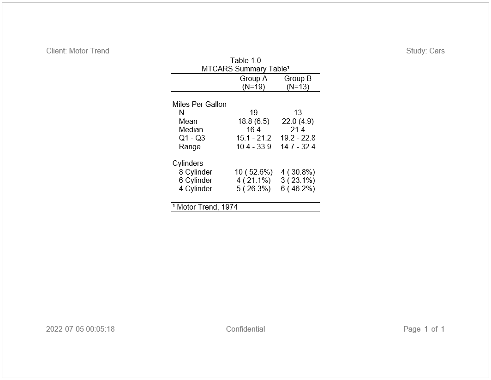
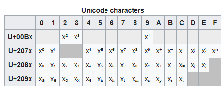

It is very common to include superscripts and subscripts on a statistical report. These symbols clearly tie together footnotes with particular report elements.
The reporter package supports superscripts and subscripts. You may add superscripts and subscripts to your report by providing a Unicode superscript or subscript code. In R, a Unicode character is indicated by a backslash (\), the letter U, and a four-digit number. For example, a superscript number two (2) is written as “\U00B2”.
Here is an example of using Unicode superscripts in the title and footnote of a report:
library(reporter)
library(magrittr)
# Create temp file path
tmp <- file.path(tempdir(), "example13.rtf")
# Prepare Data
dat <- airquality[sample(1:153, 15), ]
dat$Month <- as.Date(paste0("1973-", dat$Month, "-01"))
# Define table
tbl <- create_table(dat, show_cols = c("Month", "Day", "Wind", "Temp", "Ozone")) %>%
titles("Table 9.6", "Air Quality Sample Report\U00B9",
borders = c("top", "bottom"), blank_row = "none") %>%
column_defaults(width = .7) %>%
define(Month, format = "%B", align = "left", width = 1) %>%
define(Temp, format = "%.0f") %>%
footnotes("\U00B9 New York, May to September 1973",
borders = c("top", "bottom"), blank_row = "none")
# Define report
rpt <- create_report(tmp, output_type = "RTF", font = "Arial",
font_size = 12, missing = "-") %>%
page_header("Sponsor: EPA", "Study: B34958", blank_row = "below") %>%
add_content(tbl) %>%
page_footer(Sys.Date(), right = "Page [pg] of [tpg]")
# Write the report to the file system
write_report(rpt)
# View report
# file.show(tmp)
To get superscripts or subscripts into table cells, they must be added to the table data prior to reporting. Simply use the standard R subset operators to append the Unicode character to the desired cell value.
Here is an example appending the superscript two into a cell in the second row, column “A”, using the MTCARS data frame from the previous example:
# Append superscript using paste0()
df[2, "A"] <- paste0(df[2, "A"], "\U00B2")
# View data frame
df
# var label A B
# 1 ampg N 19 13
# 2 ampg Mean 18.8 (6.5)² 22.0 (4.9) # Observe superscript in column A
# 3 ampg Median 16.4 21.4
# 4 ampg Q1 - Q3 15.1 - 21.2 19.2 - 22.8
# 5 ampg Range 10.4 - 33.9 14.7 - 32.4
# 6 cyl 8 Cylinder 10 ( 52.6%) 4 ( 30.8%)
# 7 cyl 6 Cylinder 4 ( 21.1%) 3 ( 23.1%)
# 8 cyl 4 Cylinder 5 ( 26.3%) 6 ( 46.2%)The below table shows all of the available numeric superscripts and subscripts. Note that in addition to superscript and subscript numbers, Unicode also contains characters for common mathematical operators and some frequently used letters.

There are Unicode superscripts and subscripts available for most letters of the Latin alphabet, plus numerous special symbols. These codes may be discovered via an internet search, and can be used in the same way as the numbers shown above.
Multiple Unicode characters can be combined to create more complex superscript or subscript expressions. Here is an example of such an expression:
# Create complex unicode expression
ex1 <- "x\U207D\U207F\U207A\U2074\U207E"
# View expression
ex1
# [1] "x⁽ⁿ⁺⁴⁾"The Unicode characters in the above table will work on all output types, with one exception. The PDF output type only supports superscripts in the first row. In other words, it only supports superscripts for the numbers one, two, and three. PDF will render other Unicode superscript or subscript characters as a question mark. If you need to output other superscripts or subscripts with the PDF output type, it is recommended that you use parenthesis () or the carrot ^ character to signify a superscript or subscript, or use a another supported symbol from the ASCII character set.
Next: More Examples